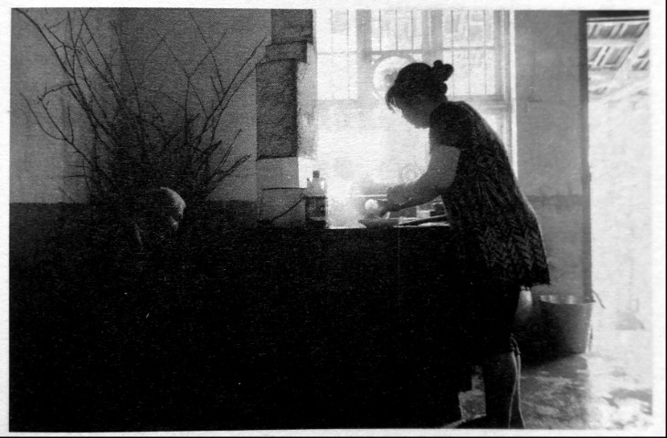

自卫团：警察和游击队组成的抗日队伍

口述人 / 柳元青，1925年农历四月二十一日出生，现住长沙县金井镇脱甲村，第三次长沙会战时加入当地的自卫队，当机枪手。1945年抗战结束后进入73军，1948年在济南被解放军收编，1950年入朝。当了那么多年兵，因为婶子的一句“家里就都指望你了”，退伍后回家务农至今。
采集人 / 刘见华 采集时间 / 2014年8月28日
“他们把枪扔在一边去抓鸡，我跑过去背了枪就跑”
打仗啊，好多记不起了，70多年了。记得第三次长沙会战，日本人逃回岳阳，大部队跑了，后面还有据点嘛，我们就去搞他的据点。有两次，我们把他们外头那机关枪给搞回来了，还有三十几条三八式，哈哈。日本人在福临铺的据点就是我们的人修的，平时我们穿老百姓的衣服，借着给“维持会”送菜，顺便就搞了他们的枪，主要是偷。有一回被发现了，我做死地往山上跑，背了好多枪嘛，背上被挂得稀烂的，跑了10多里路，跑慢一点就被打死了。
这么危险为什么还参加自卫队？那还不是没办法。家里穷得要死，书没读几天，他们还把我的名字搞错了。我以前叫柳元清，有三点水的，结果到学堂里变成了柳元青，少了三点水，这不好，我还是喜欢有水的。
我12岁到织房学徒，14岁学泥瓦匠，15岁帮人种田，16岁就到乡公所的自卫队去报了名。我个子高噻，他们就让我当机枪手，扛“歪巴子”。家里条件好的都不得去搞那个路，我是走投无路了。我不知道的是，我这一走，就再也没见过我奶奶了。
当时自卫队里大多数是外地人，四川、河南、云南、贵州，有逃难过来的，也有打散的兵。老大叫周应龙，就是我们金井人，他屋里头有资本，不是一般的人咯，自卫队不发饷，他自己想办法筹钱，至少让我们吃饱，不亏待弟兄们。
我们主要是搞游击，都是偷偷摸摸，没有几回正式地打，哈哈，你要是跟我打，我就跑了。日本人下乡来搞老百姓的猪啊、鸡啊，人一少，我们就打他们的伏击，主要是为了抢枪。有一回几个日本兵，也蛮大意啊，几只枪一扔就去抓鸡，我赶快跑过去，背了枪就跑，哈哈。
护路和毁路也搞。就在金井这一带，有时候也跑到星沙那边去一下。再后来，日本鬼子搞报复，周应龙就把我们带到浏阳去了，加入廖义华的抗日挺进军。那个人了不得，从几条枪、几十个人做到了2000多个人，连美国人都相信他。廖义华可能呷鸦片烟，家里那个烟味喷香的。但是他做人呢没有周应龙好，只想着自己拉队伍、占地盘，不管我们的死活。6
日本人投降那会儿，我还打死过一个。我看到两个日本人牵着马往河边走，就用那机关枪打死了一个，另一个跑了。后面有人过来说，日本人都投降了，你还打什么咯。
抗战胜利后，我们划归73军，军长是韩浚。他们来了一群参谋，跟我们各个自卫队的负责人讲，日本鬼子投降了，到我那里去，穿咔叽布军服、穿皮鞋，实在不愿意的呢，就发三个月军饷，回去种田。好多人都不去，但我家里没有人了，又不想回家种田，我就留了下来，还是机枪手，重机枪连的7。
我们司令周应龙是个好人，他没做啥坏事，后来也被当作反革命枪毙了。廖义华那个老地主，不晓得他后来怎么样了。

2014年8月28日，长沙县金井镇脱甲村，闲不住的柳元青在帮厨。
6. 我们没能在史料中找到廖义华的更多细节。在湖北鄂州的中共鄂南抗日根据地旧址，有碑文介绍说明，1944年3月，国民党鄂南挺进军马钦武部、廖义华部，趁新四军主力部队撤到江北、鄂南根据地兵力空虚之机，联合出兵1500余众，进攻鄂南根据地，根据地进行反击，打死打伤顽军100多人。从这里可以看出，至少廖义华部曾有过“鄂南挺进军”的正式名称，其时，他们有着另一种称谓——“顽军”。
浏阳县政协文史委编撰的《浏阳古今谈》一书中提到，浏阳土布商人罗贵生组织了一支七支枪的游击队，先后截击零散日军十余人，缴到步枪十余支，后被廖义华吞并。一个名叫叶贵吾的老共产党员、老红军，赤手空拳夺了日本人机枪两挺，但后来枪被廖义华“匪部”缴去，人也被他们杀了。 ↩
7. 抗战胜利后，柳元青随部队到山东，在济南被解放军收编，还参加过渡江战役。因为婶子讲过一句“退伍回来帮你找个堂客，家里就都指望你了”，柳元青1954年回到老家，结婚，再婚，第二个老婆过世得早，留下他和儿子。 ↩